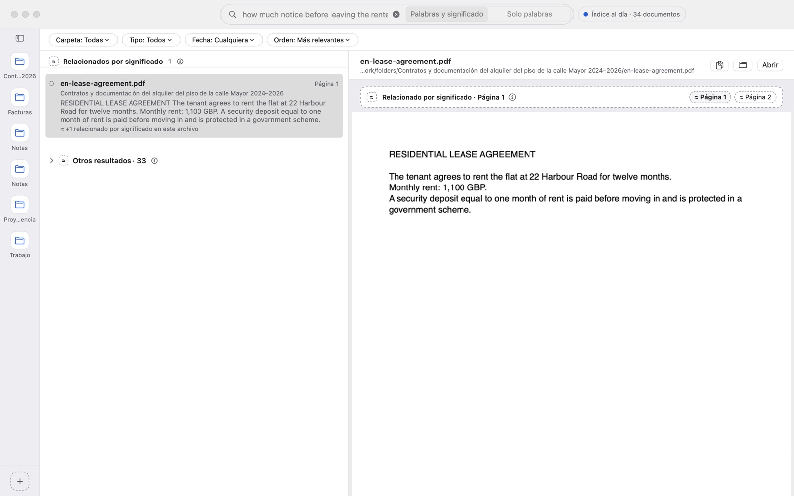

Encuentra lo que dice un documento, no solo cómo se llama.
LocalLens busca dentro de tus PDF, documentos de Word y notas por las palabras exactas y por lo que significan. Todo ocurre en tu Mac: la app no tiene acceso a internet.
…El arrendatario entrega en este acto una fianza de dos meses de renta, que será devuelta al finalizar el contrato…
A security deposit equal to one month of rent is paid before moving in and is protected in a government scheme.
Con «Solo palabras» no aparece el contrato en inglés: no contiene ninguna de tus palabras.
Dos formas de encontrar, una sola búsqueda
Escribe como lo dirías. LocalLens separa lo que contiene tus palabras de lo que habla de lo mismo con otras, para que sepas siempre por qué aparece cada resultado.
Por palabras
Resalta cada coincidencia y te lleva a la página exacta del PDF, también en documentos escaneados.
Por significado
Encuentra el pasaje aunque no uses sus palabras, también si preguntas en español por un documento en inglés.
Sin conexión
La app no tiene permiso de red y solo lee las carpetas que tú eliges. El índice se queda en tu Mac.

Instalar
Necesitas un Mac con Apple silicon y macOS 14 o posterior.
-
Instala la app con Homebrew
brew install --cask jorgeeemera/tap/locallens¿Sin Homebrew? Descarga
LocalLens-0.2.1-arm64.zipdesde GitHub Releases y arrastra la app a Aplicaciones. -
Autoriza la app la primera vez
Al abrirla, macOS avisará de que no puede verificar la app y no la abrirá. Ve a Ajustes del Sistema › Privacidad y seguridad, baja hasta el aviso de LocalLens y pulsa Abrir igualmente. Solo hace falta una vez.
Por qué pasa: esta beta no está notarizada por Apple. Gatekeeper y el aislamiento (App Sandbox) siguen activos; solo autorizas esta app. No desactives Gatekeeper. -
Añade tus carpetas
Pulsa + y elige las carpetas donde buscar. La búsqueda por significado viene incluida: el modelo se prepara solo en unos segundos la primera vez, sin descargar nada.
Qué esperar de la beta
- Versión
- 0.2.1, gratuita
- Descarga
- Unos 220 MB, casi todo el modelo
- Requisitos
- Apple silicon (M1 o posterior), macOS 14 o posterior. Probada a fondo en la versión actual de macOS; en 14 y 15 aún no.
- Formatos
- PDF (también escaneados, con reconocimiento de texto en tu Mac), Word (.docx y .doc), RTF, OpenDocument (.odt), texto (.txt) y Markdown
- Idiomas
- Interfaz en español e inglés; la búsqueda por significado entiende ambos
- Firma
- Ad hoc, sin notarizar (de ahí el paso 2)
- Modelo
- multilingual-e5-small de intfloat, incluido en la app, licencia MIT (texto dentro de la app)
- Desinstalar
brew uninstall --cask locallens. Tu índice no se borra; puedes borrarlo antes desde Ajustes.